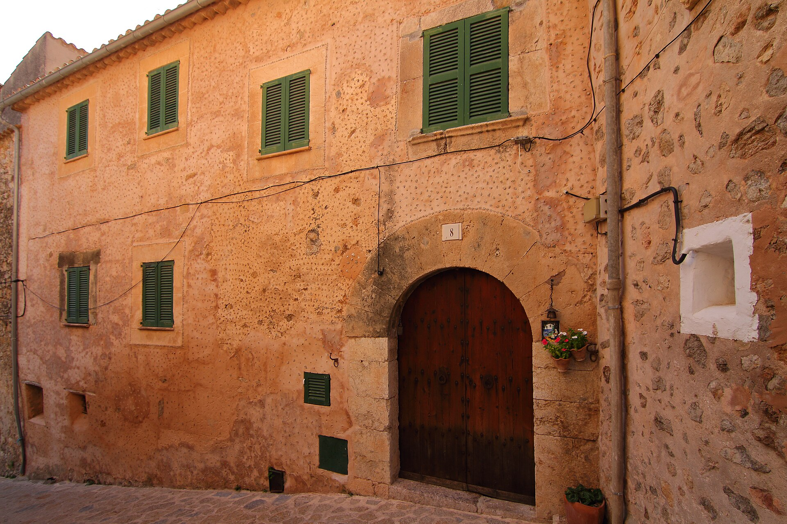

Can Pou
A farmhouse with walls a metre thick and a well that still fills in March.
Guide €4.9m5 bedrooms · 420 m² · 2.1 ha
Enquire about Can Pou

Solell is a small agency for people buying a home on the islands. We keep a short list, six houses at present, and we know each one room by room.
Enquire privatelyWe have walked every one of them with its owner, in the morning and again at dusk.
A farmhouse with walls a metre thick and a well that still fills in March.

A village house the colour of the hill behind it, with a walled garden the street cannot see.

Stone house and tower under the Tramuntana, with forty terraces of olive and one of lemon.
Specimen screen. Solell is a fictional agency; homes and prices are illustrative. Photographs are stand-ins from Wikimedia Commons.